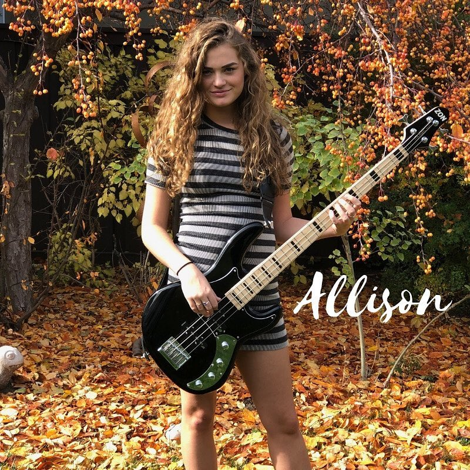
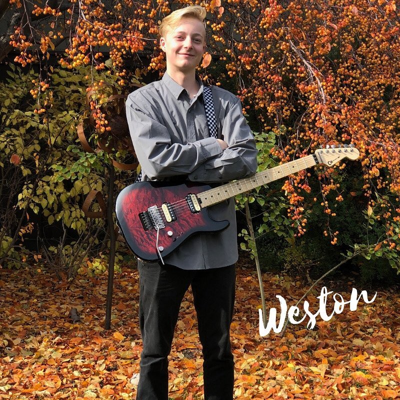

About
From pizza eating junkies to soda drinking addicts, Last Minute Take Out is here to serve you the finest quality rock and roll tunes around! G is bringing you some tasty drum fills, Weston is serving you world famous guitar noodles, and Allison on bass and vocals will warm your hearts with a nice cup of hot musical soup. Last Minute Take Out is here to rock, and then will pick up some fries on the way home. Last Minute Take Out is a newly formed band of 3 teenagers from Sandy, Utah. They have experience with all genres of music but really enjoy playing classic rock. These kids have many years of experience touring Utah, Idaho, and California with School of Rock, Sandy. They have played with local bands Royal Bliss, American Hitmen, and Jagertown. They have also had the awesome opportunities to open for Bret Michaels, Vince Neal, Terri Clark, Warrant, and Slaughter.
Allison
I’ve been playing bass guitar for 8 years and stand up for 3. I’ve loved to sing as long as I can remember but didn’t start taking my voice seriously until about 2 years ago. My inspirations include all of the rock and roll women from the past like Pat Benatar and Joan Jett. I love to play bass and sing but my heart lies with performance. I love to play in front of people and show them what I have to offer to the music community through my passion for performance.
Guillermo

I have been playing drums for 6 years playing everything from punk to progressive and thrash metal to jazz. Aside from my teacher, Mike Dale, my biggest influences are Mike Portnoy, Jimmy "The Rev" Sullivan and Gavin Harrison. Studying under, jazz great, Carl Allen has opened my eyes to a whole new world and now I'm delving into David Garibaldi's funky mind. Music is my passion so I also play bass and guitar but drums are my first love.
Weston
I have been playing guitar for 4 years now. When I started playing guitar, James Hetfield from Metallica really inspired me to want to play guitar and learn more. I like all types of rock music and seeing what others have done in the music world inspires me to do something great as well.